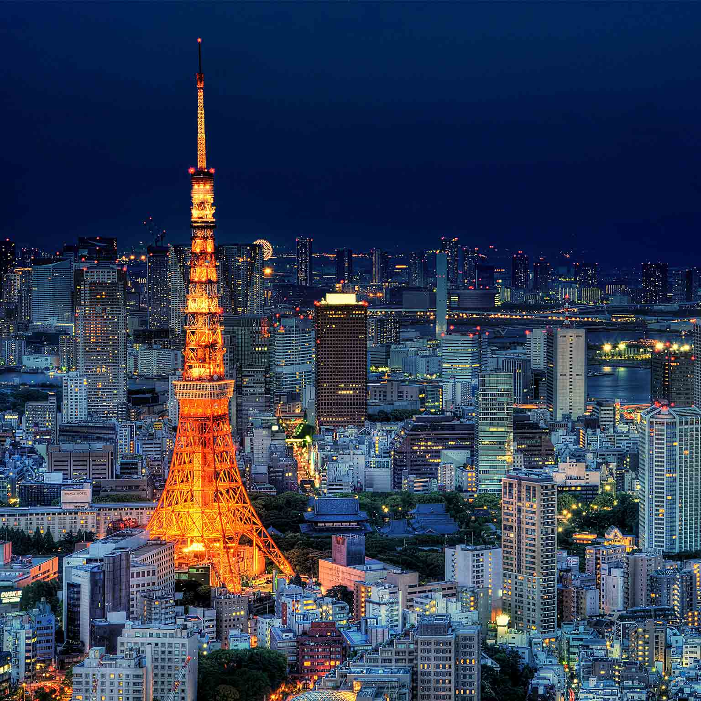

Places I'd Like To Visit
- Japan -
I really want to visit Japan as I recently became very interested in the culture and what is has to offer when I
first started watching a streamer who streamed himself walking and cycling the streets both at day and night.
During the daytime the streets are packed tight with thousands of people working or shopping or doing the usual you
would typical see here in a bigger city. The nightime is what really drew me in. the streets lit up with neon lights
everywhere and even though im not much of a partier these days, everyone in japan was partying everywhere as alcohol
is legal to consume right in the streets and some bars stayed open till the very next day. As I continued to watching
the streamer daily for about 3 years still to this day, I was fascinated with the artwork, animations, food style and
just about anything you really wouldn't see around here in our country.

3 Facts About Japan
-
Pachinko is a very popular type of entertainment similar to a game of western pinball and slot machines.
Small steel balls drop a machine and bounce and slide down various paths.
Pachinko was invented before world war 2 but it was only after the war it became insanely popular.
Each steel ball played with represents approximately 4 yen and players
drop in thousands of steel balls at a time.
Depending on the machine the probability you will hit a jackpot or not may be seen.
The chances are usually 1/99 or 1/200 per spin.
There are 2 jackpots one called "ooatari" which is the bigger of the 2 and another called "koatari" (or small jackpot).
Although it may look like gambling Pachinko is technically not, while gambling in japan is actually illegal,
the machines use balls and not money even though you can exchange the balls for money or other prizes
it seems Pachinko has a loophole.
-
Japans cuisine is absolutly amazing from seafood or sushi to rice, noodles, or ramen, beef or chicken, its the unique ingredients and special ways they prepare the food
makes it so interesting. They even have brewed rice beverage made up by multiple fermentations of the rice called "Sake" that contains 14-17% alcohol and is widely used
in the culture.
-
In Japan Sumo is considered the national sport. Martial arts such as judo and kendo are taught as part of the junior high curriculum. Baseball is the most popular
spectator sport and professional football was established in 1992 gaining a wide following fast. Japan has hosted the Summer Olympics twice in Tokyo(1964 and 2020) making Tokyo
the first Asain city to host the olympics two times. The Winter Olympics were also held twice, one in Sapporo(1972) the other Nagano(1998) as well as the Basketball World Championship
in 2006 and a future one in 2023.
More Info On Japan:
Japan has a population of 126.2 Million as of 2020. The currency used in Japan is called Yen. Japan is also known
widely for traditional arts including tea ceremonies, flower arranging and a legacy of distinctive gardens.
- ROME -
Ever since I can remember I have always been so fascinated by the Medieval(Middle Ages). Growing up watching fantasy movies
and shows like Lord Of The Rings and Spartacus. The Colosseum always had my eyes the storys of gladiators and warriors battling
till the death was so interesting.
3 Facts About Rome
- Rome was the first city in the world to record a population of 1 Million people. The mass of people came from 3 different continents: Europe, Asia and Africa.
- Rome had dominated Europe for over 700 years and by the end the Roman Empire amounted to just over 2 Million miles and stretched from Syria over to Scotland.
- Romans had hundreds of gods. The ancient Romans were polythistic, basically meaning they worshipped multiple gods for different reasons. Mars was the God Of War
Jupiter was the King Of Gods, and they even went as far as adopting gods from other cultures like the green and egyptian gods.
More Info On Rome
As of 2021 Rome has a population 4.298 Million people. Rome uses the Euro as its currency. Rome is home to the Colosseum where
Gladiators and Warrios Use to battle till the death infront of people for entertainment.
- TORONTO -
Toronto has always been my number one spot to visit in Canada. It houses my favourite basketball team The Raptors and one of my
favourite Music Artists Drake. The big city is beautiful and the skyscrapers tower over you. The streets are packed with people, working
shopping or street vendors serving just about anything you can think of.
3 Facts About Toronto
- Toronto is home to 6 professional sports teams(Jays,Leafs,Raptors,Argonauts/FC/Rock)
- Toronto is the largest city in Canada and has a diverse population, people from across the world visit Toronto every year,
- Toronto has the largest street in the world. Yonge Street spanning over 1896km from the lake shore to rainy river at the ontario border and took its place in the Guinness book
of world records
More Info On Toronto
As of 2021 Toronto has a population of 2.794 Million people. The Currency in Toronto is the Canadian Dollar(CAD). Torontos Sports Stadium is called The Rogers Centre(Originally SkyDome)
and its home to The Leafs, Raptors and Bluejays